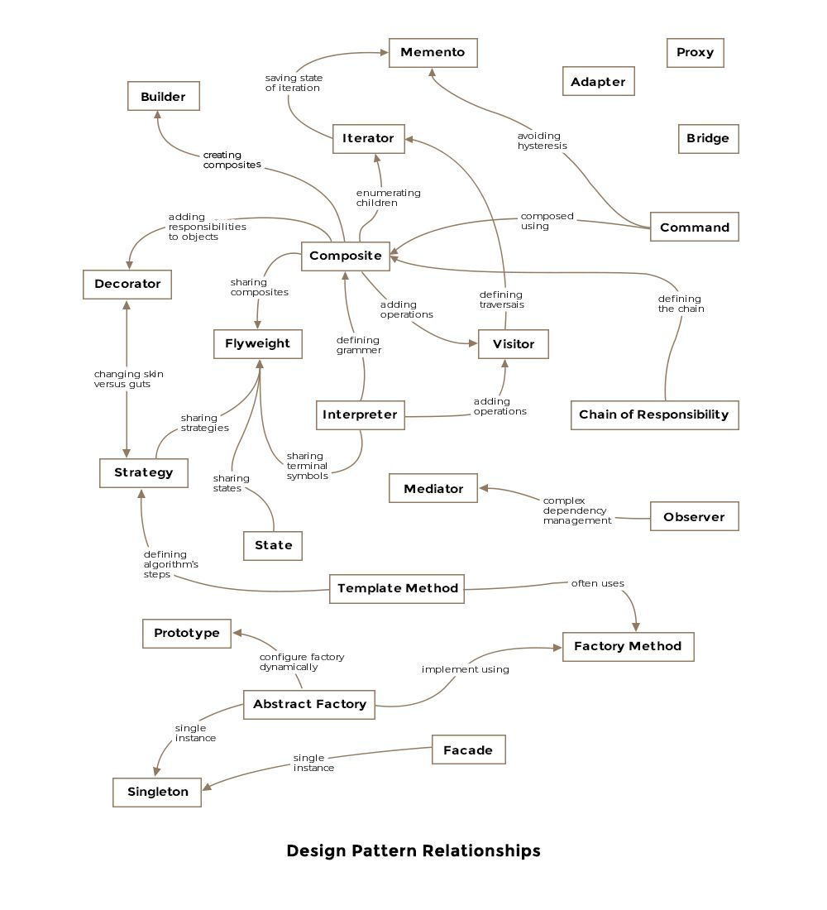
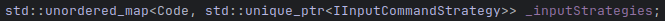
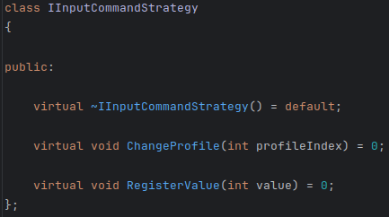
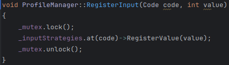

Since my beginnings as a programmer, the vast majority of projects in which I have participated, I have used OOP.
This fact has led me to study the Design Patterns described by Erich Gamma, Richard Helm, Ralph Johnson, and John Vlissides.
This knowledge helped me to design better implementations in my projects.

Example
In an as-yet-unpublished C++ project related to mouse inputs, a given input triggers a given command.
My implementation requires a map, where the key is an input code and the value is an object that would manage the command given to that input, with the input log value.

But the input logs are not equal from button to scroll. Due to this, they need to be treated differently.
This implementation requires a Strategy to treat button input logs and another one to treat scroll input logs.
Once they are implemented, an interface must be implemented too.

Finally, these Strategies have to implement this interface in order to be stored in that map, for later use.
